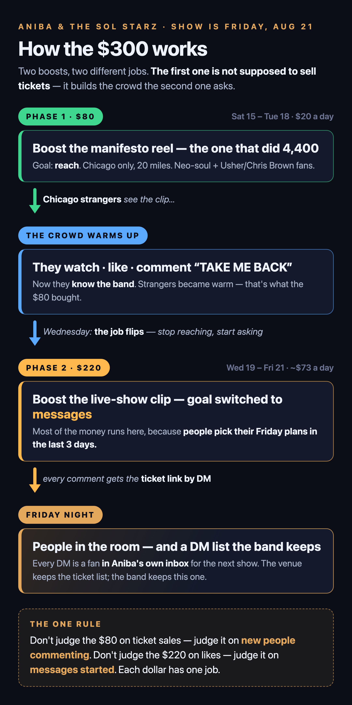
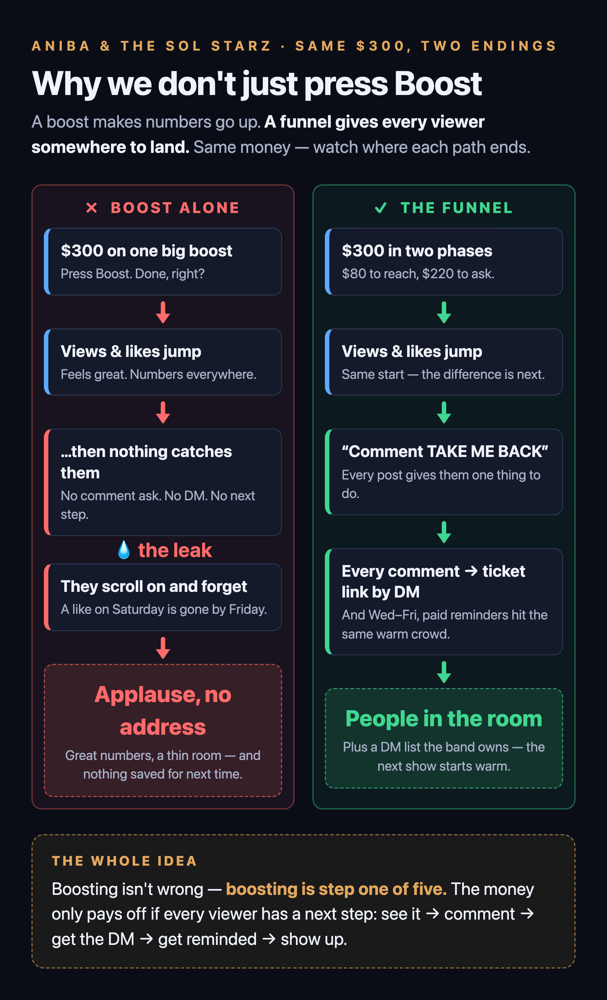

The Boost Report
These diagrams show the plan as designed. Only the first half of it ran.


The money is deliberately back-loaded. People decide what they're doing Friday night in the last three days, not a week out. So the first stretch spends a little to widen the circle, and the last three days spend most of it asking the circle to come.
| Phase | Days | Money | What to boost | Boost goal |
|---|---|---|---|---|
| 1 — Fill the room's attention | Saturday, August 15 – Tuesday, August 18 | $59.68 spent of $80 planned · ✅ finished |
The manifesto reel — the one that did 4,400 | Views / engagement |
| 2 — The ask | Wednesday, August 19 – Friday, August 21 | CANCELLED $220 planned · $0 spent |
The live-show clip, plus the plain date-and-venue post | Messages |
All of this happens in the boost sheet that opens when you tap Boost on the reel, from Aniba's profile. Her profile is in professional mode, so the button is there.
| Setting | What to choose |
|---|---|
| Goal | Phase 1: more reach / engagement. Phase 2: more messages |
| Location | Chicago, 20-mile radius. Never "everywhere" — nostalgia clips travel nationally, and a viewer in Atlanta can't come Friday |
| Interests | "Neo soul" isn't a Facebook interest — the artists are, and they're sharper. Search each name and pick the result tagged Interests (skip anything tagged Demographics or Behaviors): Soul music · Erykah Badu · Jill Scott · D'Angelo · Maxwell · Lauryn Hill · Musiq Soulchild · Rhythm and blues — plus Usher and Chris Brown (see the competing-show fold below). If a name doesn't appear as an Interest, skip it rather than forcing a near-match |
| Age | 28–55 — the audience that owns these songs |
| Daily amount | Phase 1: $20. Phase 2: $73 |
| End date | Phase 1: Tuesday, August 18. Phase 2: Friday, August 21 — set the end date in the sheet so it can't quietly keep spending past the show |
One number, once a day: cost per result — the boost sheet shows it on the running promotion. In Phase 1 a result is an engagement; in Phase 2 it's a message started.
- Working: the number holds steady or falls day over day, and TAKE ME BACK comments come from Chicago names.
- Not working: it climbs two days in a row. Don't add money — tighten the radius to 10–15 miles, or swap the creative for the live-show clip, then watch one more day.
- Expect the price to rise August 19–21 anyway — a sold-out arena show pulls every promoter and bar in Chicago into the same auction that weekend. A modest climb those days is the auction, not your ad.
The actuals, on $59.68 over three days: 7,443 people reached, 2,049 views, 1,770 taps on the link, and 1,593 landing page views at 4 cents each. Who it reached: 63% women, and skewed older than expected — 55-and-up was the bulk of it, with under-35 barely represented. Worth knowing for the next show.
⚠️ What these numbers cannot tell you is ticket sales, and that was true from the start: the venue owns the ticket page, so no sale can be traced back to an ad. Cheap taps are not the same as a filled room. Paid was a contributor to this show, not the thing that fills it. The room gets filled by the band's own audience, the daily posts, the reshares, and the DM list — the money's job is to make sure the people who already know this band don't forget the date, and to put the clip in front of Chicago strangers who'd genuinely like it.
The Usher & Chris Brown show — same night, sold outwhy that's good news
Sold out is the best version of a competing show. Everyone holding those tickets was never coming anyway. But the people who wanted tickets and couldn't get them are now R&B fans, in Chicago, with Friday night already set aside for live music and money already budgeted for it — and no plans. Nobody else is talking to them.
- That's why Usher and Chris Brown are in the interest targeting. It aims the boost at exactly the people whose Friday just opened up.
- The pitch is alternative, never consolation. What an arena can't be: a live band, close enough to see faces. "Friday night, grown folks R&B, live band — no nosebleeds, no $400 resale." Never "the backup plan."
- If their arena is near The Haven, say "park early, doors 7PM" in the show-week posts; if it's across town, ignore it.
What this can't do, and whythe honest fine print
No ticket tracking. The checkout is the venue's. Only the page that owns a checkout can install the tracking that connects an ad to a sale — that's Haven, not the band. Every "did it work?" answer therefore comes from comments, DMs, and event responses. That's also why the comment-to-DM move is on every post: it's the scoreboard.
No retargeting audiences. Building a custom audience ("everyone who watched 25% of a video") requires a business Page with an ad account. A personal profile in professional mode — where all the winning posts live — can boost, but can't build audiences. The interest-plus-radius targeting above is the strongest version available from this surface, and it's plenty for a local show.
Was worth checking Monday — moot now, Phase 2 was cancelled: whether the band Page can boost the Facebook event directly. Keeping the note because it is still the right first move on the next show — event boosts come with Facebook's free reminders the day before and the day of.